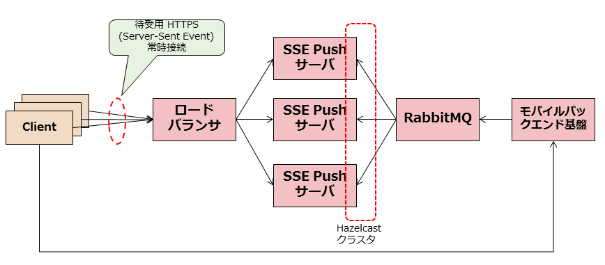

3. システム構成¶
3.1. 構成¶
SSE Push サーバのシステム構成は以下のようになります。
{kind=link}
3.1.1. クライアント¶
SSE Push 通知を受けるクライアントは、SSE Push サーバクラスタに HTTPS 接続します。 この接続は HTTPS 上の Server-Sent Event プロトコルを使用するようになっています。
クライアントは 接続を常時維持 しており、この接続を通して SSE Push サーバからのPush通知イベントを待ち受けます。
3.1.2. ロードバランサ¶
ロードバランサはクライアントからの HTTPS 接続を受付け、後段の SSE Push サーバクラスタに振り分けます。 なお、HTTPS (TLS) の終端はロードバランサが行う必要があります。ロードバランサ - SSE Pushサーバ間の接続は(平文の)HTTP となります。
3.1.3. SSE Push サーバ¶
SSE Push サーバは、クライアントに Push メッセージを配信する機能を持ちます。
SSE Push サーバはクライアントからのコネクションをすべて維持管理しており、 メッセージキューから配信指示されたメッセージを適切なコネクションに分配する作業を行います。
配信するPushメッセージや接続中クライアントなどの情報は、すべてメモリ上(Hazelcast クラスタ)に保持しています。
3.1.4. メッセージキュー¶
SSE Push サーバへのクライアント登録および Push メッセージ配信指示は、AMQP によるメッセージキューで行います。 メッセージの配信は RabbitMQ サーバが行います。
3.1.5. モバイルバックエンド基盤サーバ¶
モバイルバックエンド基盤サーバは、メッセージキュー経由でSSE Push サーバへの各種指示を行います。 具体的には以下の指示を行います。
- クライアントの登録処理
- Push メッセージ配信指示
また、クライアントからの登録受付や送信リクエスト受け付けもモバイルバックエンド基盤サーバが行います。
なお、SSE Push サーバが要求する AMQP のプロトコルを守れば別のシステムに入れ替えることも可能です。
3.2. クラスタ構成¶
SSE Push サーバはクラスタ構成にすることができます。 クラスタリングには Hazelcast を使用しています。 Hazelcast では各ホストのメモリ上にデータを分散して保持しています。
通常は、 最低2台以上 でクラスタ構成にしてください。 1台のみ構成でも動作は可能ですが、サーバに障害が発生すると Hazelcast 上のデータが 失われるため送信待ちの Push メッセージが喪失してしまいます。
クラスタの各ホストの発見にはデフォルトではマルチキャストが使用されます（ユニキャストを用いることも可能)。 マルチキャストを使用する場合全サーバは同一のサブネット上に配置する必要があります。